The images Qalibre sends in Telegram. Each one names its token with the token's logo, says a single thing, carries our mark, and links back to the bot with the sharer's invite code.
Sent when someone pastes a token address. The picture shows the token, its price and its safety verdict; the message under it lists what the check found, with Buy, Sell, Refresh and Share buttons. A blocked token shows its warning card instead and gets no Buy button.
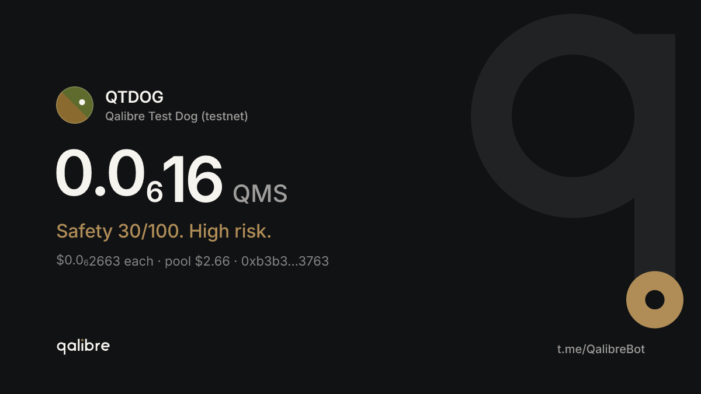
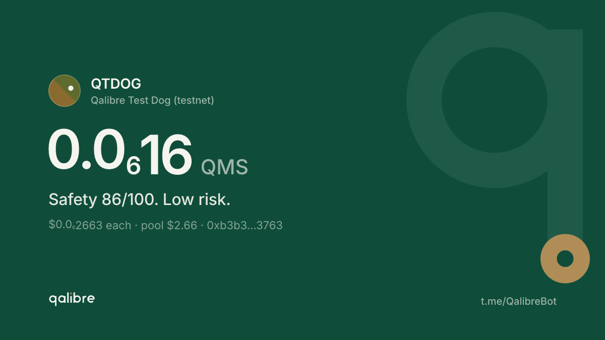
Sent when someone taps Share on a filled order. If Qalibre beat the direct swap, the improvement leads. If it matched the direct price, the amount received leads.
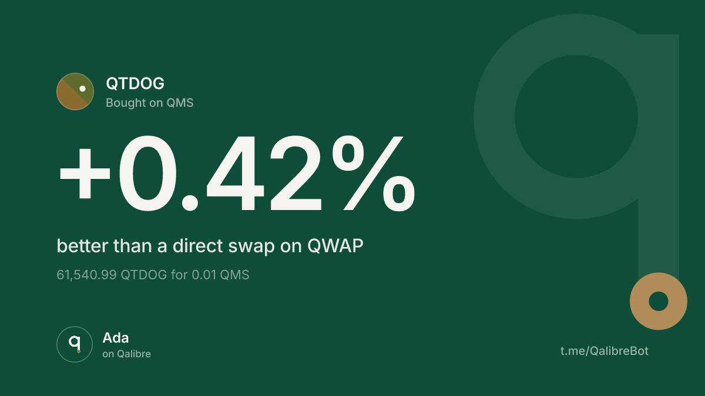
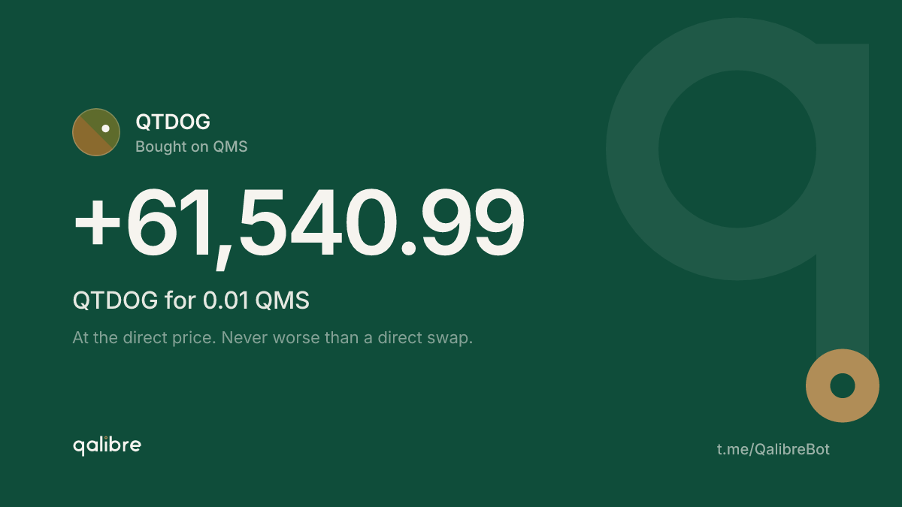
From /portfolio and /savings. Profit is measured against what selling all of it returns from the pool now, so the number is real. A loss is shown on black, never hidden.
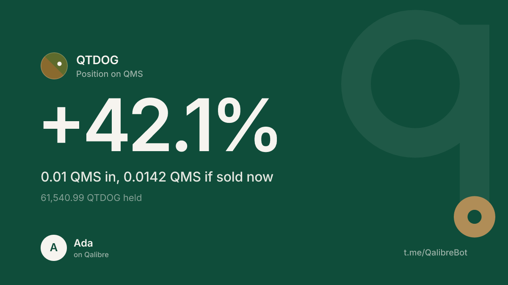
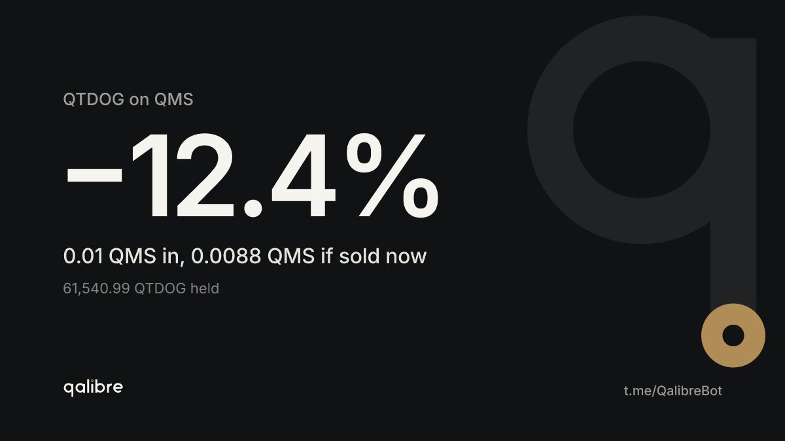
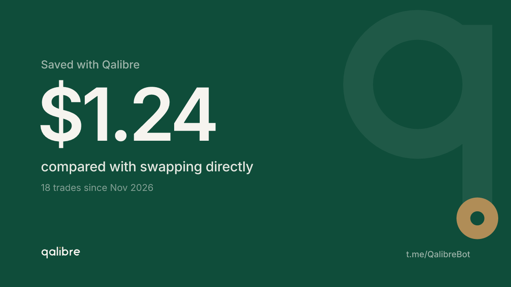
From /invite and /stats. Cards a person shares carry their Telegram photo and first name in the footer; without a photo, their initial. Stats lead with scams blocked, which is true from day one.
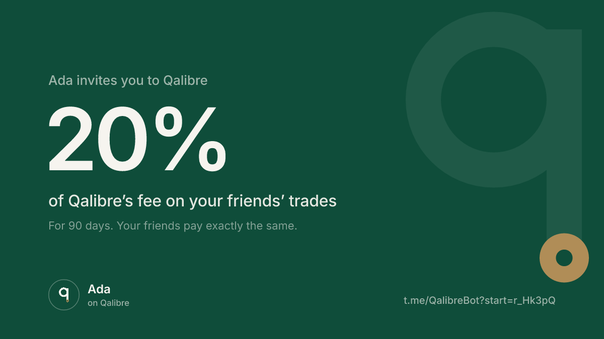
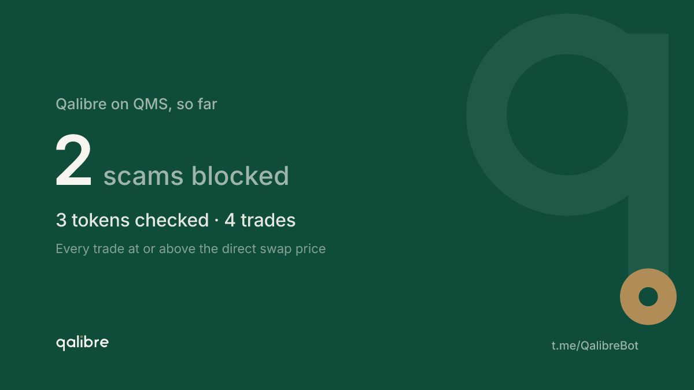
Posted in a group when someone shares a dangerous token, and on request with /token. Red means blocked, brass means high risk. Safe tokens get no alert.
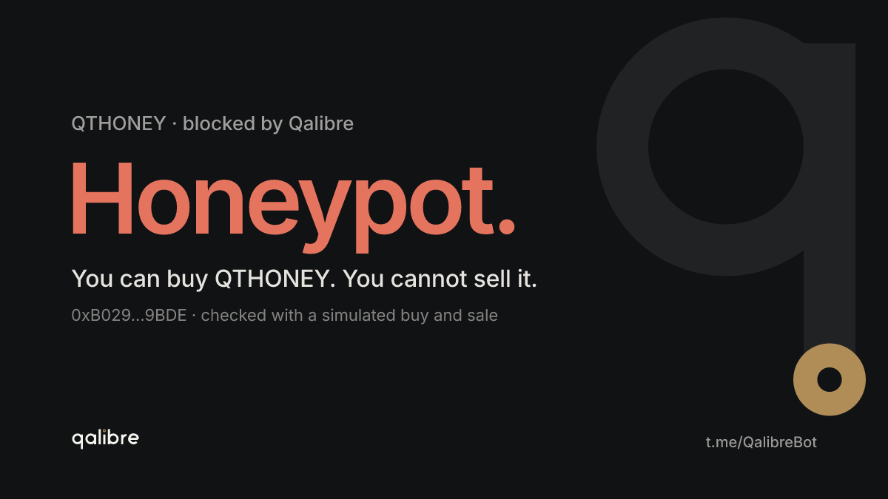
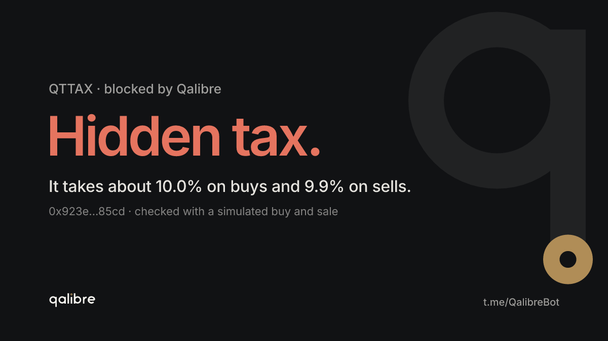
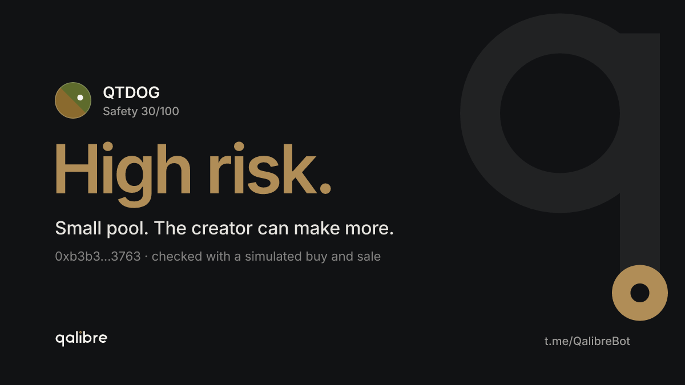
Token logos come from the QMS explorer when a token has one. No QMS token publishes a logo yet, so each token gets its own emblem, generated from its address: the same token always looks the same. All cards are 1200 by 675, the shape Telegram and X show without cropping.